The project is mainly about image morphing. In the first half of the project, I am going to produce a "morph" animation of my face into my friend's face, and
for the second half, I am going to compute the mean of a population's faces and extrapolate from that mean to create a caricature of myself. It's further divided
into 5 parts and 1 additional part for Bells and Whistles: 1) Defining correspondence points and construct the triangulation, 2) Compute the "mid-way face"
between my face and my friend's face, 3) Creating the morph sequence and generate the gif with 45 frames of animation, 4) Compute the "mean face" of a population
based on database given on website, 5) Extrapolating from the mean to create caricature of myself, and 6) Music video + Change Gender.
Part 1 : Defining Correspondences
To start with, I first select 26 keypoints from each input image: my face and my friend's face manually using the ginput() function from matplot library and then
compute the mean of the two point sets. Then, I used the mean of point sets computed to construct the triangulation mesh for morphing using Delaunay() function from the
scipy library. The Delaunay() function worked pretty well as it would not produce overly skinny triangles.
Below are the facial keypoints and triangulation I generated:
my face
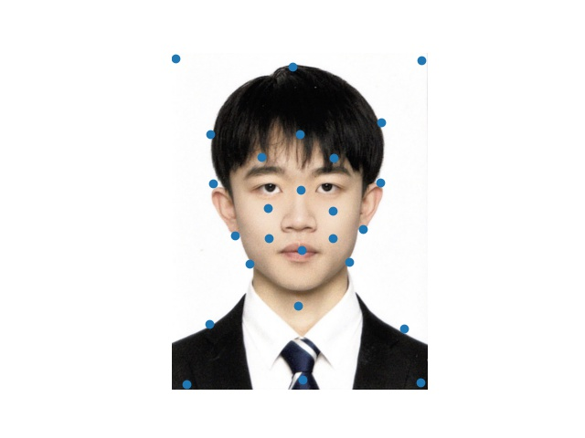
my friend's face
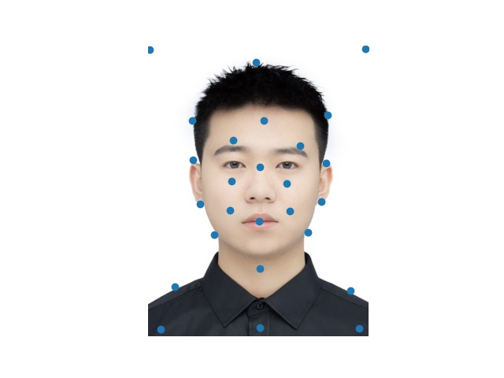
my face
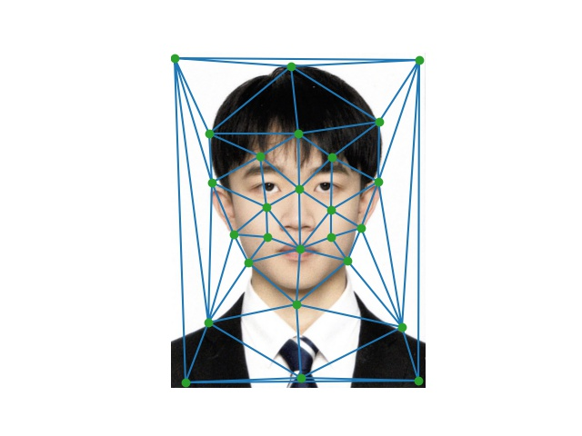
my friend's face
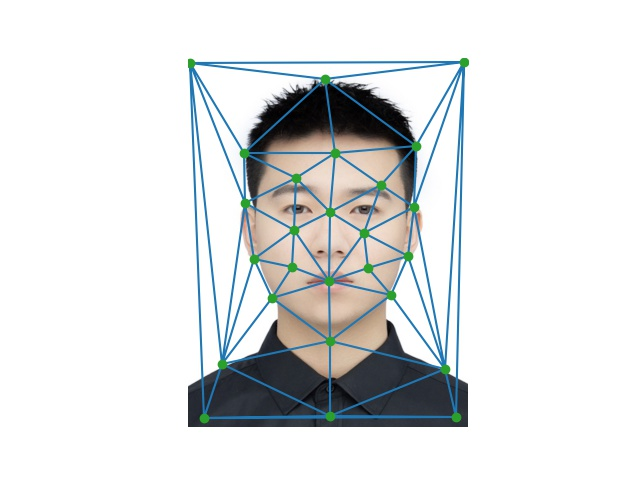
Part 2 : Computing the "Mid-way Face"
Next, I am going to compute a mid-way face of my face and my friend's face and the steps are:
1.Compute the average shape. For this, I just reuse the mean point set computed in part 1.
2.Warping both faces into the average shape. To do this, we need to first compute the affine transformation matrix for each pair of triangles on two images, so I defined
computeAffine() function which will take the coordinates of two triangles and return the transformation matrix. In this function, I first append each of the coordinates with
ones-vector to turn them into 3-vectors and then compute the matrix by linear algebra: T*A = B -> T = B*A^(-1) where A, B are the coordinates of the first and the second triangles
and T is the transformation matrix. This could cause some problems when A is singular, but for the triangles I constructed in this part and the triangles provided in later parts,
it works well.
3.Average the colors together. I come up with this by using inverse warp mentioned in lecture as it will not cause holes on images compared with forward warp.
For each image, I first compute the transformation matrices between triangles in the original shape and the ones in the average shape with computeAffine() function described
above and then implement an inverse warp on each pair of triangles. To get the pixels in each triangle, polygon() function from skimage library helps a lot as I can create a
mask by it and use the mask to get coordinates of all pixels in the triangle. After geting the coordinates of pixels in the triangle in average shape, I then compute the ones
in the original shape using the inverse of the corresponding transformation matrix I compute before. After traversing through each triangle, I get the warped image for one single
face and then I do the same thing to the another image.
4.Finally, I just combine two warped faces I get by the steps above with dissolve_frac = 0.5 as I am going to compute the "Mid-way Face".
Below are the original image of my face, the "Mid-way Face" and the original image of my friend's face:
my face, orignial image1
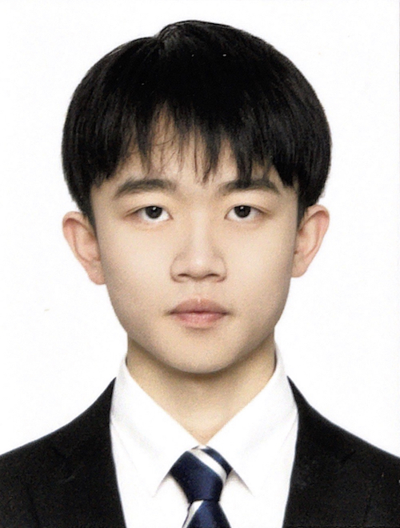
"Mid-way Face"
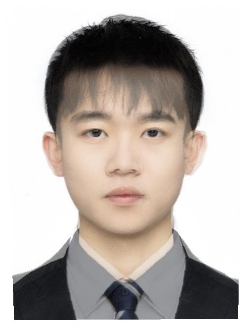
my friend's face, orignal image2
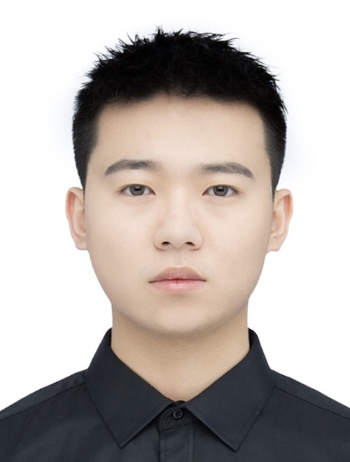
Part 3 : The Morph Sequence
Now, after completing the implementations of computing affine matrix and inverse warping the image, the morph() function is very straightforward to implement. In part 2,
I create the "Mid-way face" by warping both of faces to the average shape, so the warp_frac I use here is 0.5. To generate a sequence, we just need to change the warp_frac
over time to warp the image in different shapes and with different colors depending on the dissolve_frac chosen. To get a sequence of a morph from my face to my friend's face,
I choose 45 values from [0, 1] evenly and use them for warp_frac and dissolve_frac each time to generate 45 frames with warp_frac/dissolve_frac = 0 at the beginning and
warp_frac/dissolve_frac = 1.0 at the end.
In addition, to make the result more pleasing to eyes, I append 45 frames in a reverse order to the original 45 frames to generate a two way animation: from my face to
my friend's face and then back to my face.
Part 4 : The "Mean Face" Of a Population
Let's compute the "Mean Face" of a population! To start with, I downloaded images and keypoint sets from FEI Face Database.
(images are the nomralized ones: frontalimages_spatiallynormalized_part1 and frontalimages_spatiallynormalized_part2). Then,
1.Compute the average face shape of the whole population. I first compute the average face shape of 200 neutral faces and 200 smiling faces separately.
During the process, I noticed some of the keypoint sets given were incorrect and giving coordinates out of the range (250x300 image), so I skipped these images
and point sets. This should not matter a lot since only about 10 out of 200 images have the issue.
2.Morph each of the faces in the dataset into the average shpae. To make sure the whole image can be warped, I also add four corners to each of point set given and
the steps left are the same as the ones in first 3 parts (morph my face to my friend's face) above. Below are some pairs of the original face and the morphed face:
3.Compute the average face of the population. Using the results from the second step, the average face can be computed easily.
Below are the results I get for neutral faces and simle faces respectively:
Neutral
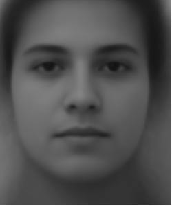
Smile
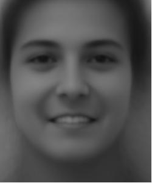
4.Finally, I reslect 42 keypoints on each image and warp my face to each of the average face and vice versa.
Reselect Keypoints:
my face
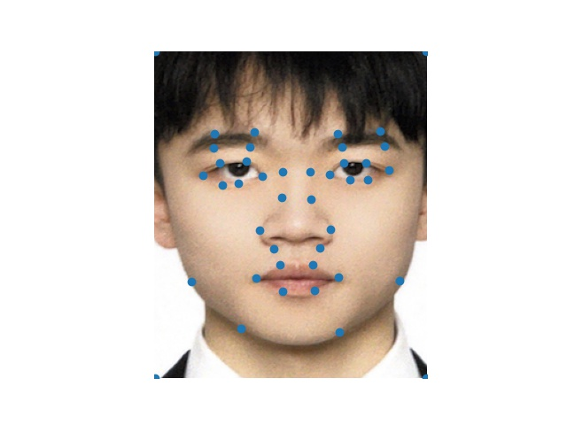
neutral avg face
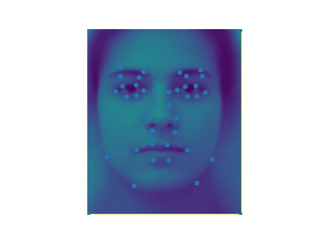
smile avg face
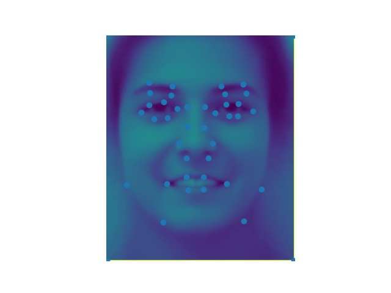
Results:
my face
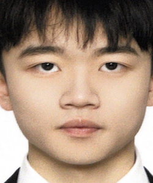
my facemy face to neutral average face
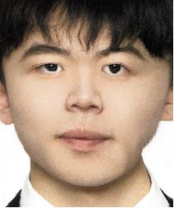
my face to smile average face
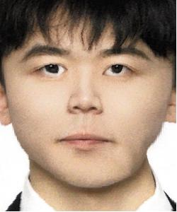
neutral average face to my face
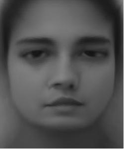
smile average face to my face
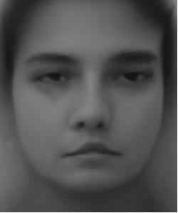
netural average facesmile average face
From "my face to smile average face" and "smile average face to my face", we can see that the whole face especially the part of mouse changes apparently:
while my face changes from neutral to smile, the average face changes from smile to neutral.
Part 5 : Caricatures, Extrapolating From The Mean
At the end, I produce a caricature of my face by extrapolating form two characteristic population means I compute in last part (neutral and smile face).
I first calculate the deviation by subtracting the shape of mean from the shape of my face and then get a new shape to warp by adding my face's shape
and alpha * deviation where alpha decides the final effects of the deviation.
We can see that as the value of alpha becomes larger, the results become more exaggerated.
I produce a music video about players in a Chinese League of Legends eSports team to wish they can do well in the upcoming World Championships.
I morph each of the players to the characters in the game they play very often and use Legneds Never Die as BGM.